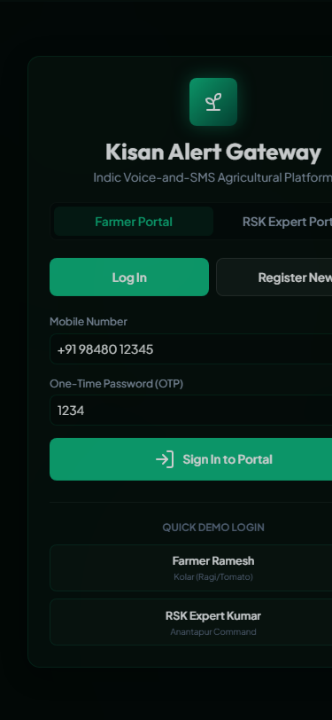
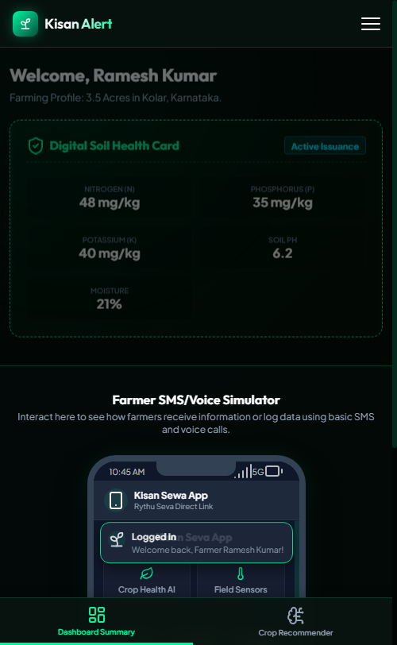
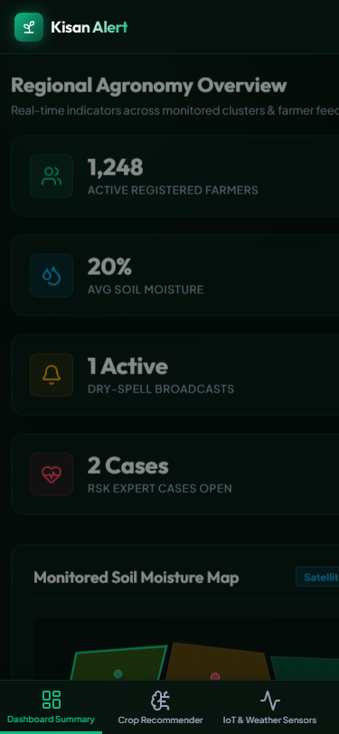

A voice-and-SMS agricultural intelligence platform in local Indic languages designed to empower small and marginal farmers with data-driven agronomic guidance.

Marginal farmers face regular crop failures and resource wastage due to critical gaps in weather advisories and diagnostic access.
Extreme climate shifts lead to unexpected localized dry-spells, ruining crop cycles without warning.
Farmers plant based on habit or hearsay rather than soil health parameters, groundwater levels, or localized rainfall forecasts.
Wrong seed selection and improper irrigation timing lead to wasted input resources and massive financial debts.
Build an accessible, voice-and-SMS platform in Indic languages targeting smallholders, composed of three core components:
Matches regional soil health parameters and satellite data to ideal seed varieties.
Aggregates ground sensors and localized forecasts to trigger irrigation warnings.
Scans leaf pathology via photo/voice, routing cases directly to local Rythu Seva Kendra experts.

Leverages pre-mapped geographic telemetry to eliminate crop planting risks.

Monitors fields dynamically to prevent dry-spell damage using localized alerts.
Enables rapid pest and pathogen diagnostic support by connecting farmers directly with regional agricultural officers.
Engineered with high-contrast UI parameters and browser APIs to run fluid simulations.
Tailored variables, dynamic dark theme legibility, and responsive fluid wraps.
Localized translate matrix, dynamic soil generation, and local state variables.
Moisture progression charts and local leaf uploader bindings.
Simulates telephone rings and reads voice alerts in Indic languages.
By delivering advanced data through accessible channels, Kisan Alert protects smallholders from climate-related financial shocks.